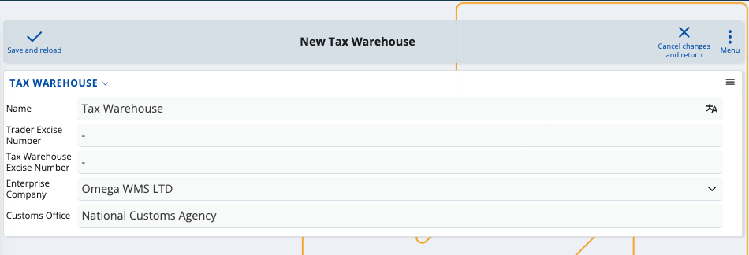

Excise
According to EU legislation, certain products like alcohol and cigarettes need to be taxed additionally whenever they are imported into a given warehouse. This one-time excise tax is also due as soon as the product itself is manufactured, and is universal for all excise products across the EU.
The Excise module is designed to assist enterprises in meeting their legal duties to regional custom agencies or other institutions requiring excise taxes. Using its available resources, you can create and generate various documents and definitions related to your excise payments. They must all eventually be included in a final excise declaration.

Note
The EU Excise legislation is applicable to all member states, but there are regional differences in how documents are filled and submitted. Excise can currently be used only in Bulgaria and features only alcoholic drinks as excise-taxable products. Categories outside of this scope will not be taxed.
Overview
In order to use this module, you first need to define a digital tax warehouse. Its purpose is to store all manufactured or imported products which are registered under the common Excise law.
Owning such a warehouse obligates you to provide regular reports of the movements of all excise products. By law, these documents need to be sent over to the customs office and/or your regional tax-collecting agency.
For example, if a product enters your tax warehouse, a particular transaction document needs to be created to reflect the excise tax payment for this operation. The same is true if the product leaves the warehouse either to be sold to a store or moved to another warehouse.
In these cases, filling out an electronic administrative document allows you to include the respective incoming or outgoing transaction. Excise is equipped with other templates and definitions for most day-to-day scenarios.

Note
Tax warehouses are not tied to a physical location. They are completely digital and you can link them to any or all of your existing warehouses, which unites them under one common environment.
Definitions
You can take advantage of a variety of system and custom definitions. The module allows you to both use and create new excise product types and categories, purpose codes, duty rates and many other entities required for tax documents.

Note
Some excise-related definitions are auto-generated while others like product type and capacity need to be manually set-up. It is impossible to submit a document without specifying a type for all of your excise products.
Excise declaration
Once filled, a transaction document must be exported as an XML file and sent to the relevant taxing authority and/or customs office.
Unless otherwise stated, you need to include all of your monthly transactions in a final excise declaration. This document unites the product movements you have reported for the month and further delivers summarized excise status information.
Note
Customs offices may have the legal right to also electronically scan the movements of products in and out of your tax warehouse. Additional transactions will be generated for each operation and you must include them in the final excise declaration.
A typical declaration includes the following:
- "From" and "To" date fields which constrain the scope of the declaration
- A list of excise products and their quantities
- Individual and total excise amount owed and paid
- Past and current availability of each excise product
- Incomes and expenses, including how many excise products were imported and exported
- Banderol stamping report
At any time, you can visualize this declaration and correct any encountered mistakes.
When ready, you once again need to export it as an XML and send it to the respective taxing authority.
Note
Customs or other taxing authorities may need direct access to your ERP.net system in order to observe your tax warehouse. In the case of Bulgarian clients, for example, there's a separate environment offering the ability for custom agencies to generate reports and see which products are available in a tax warehouse for a specific period of time.
Post-excise
If your declaration meets all legal requirements, the excise tax is settled and products can be moved freely from one store to another.
Learn more about Excise in the following articles: